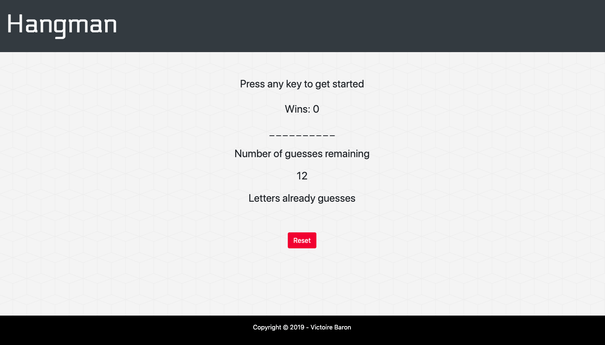

Skills
Frontend
- HTML 5 / CSS 3
- bootstrap
- JavaScript
- JQuery / React.js
- Node.js
Backend
- MySQL
- CSS 3
- JavaScript
- JQuery
- React.js


Card title
This is a wider card with supporting text below as a natural lead-in to additional content. This card has even longer content than the first to show that equal height action.
Last updated 3 mins ago